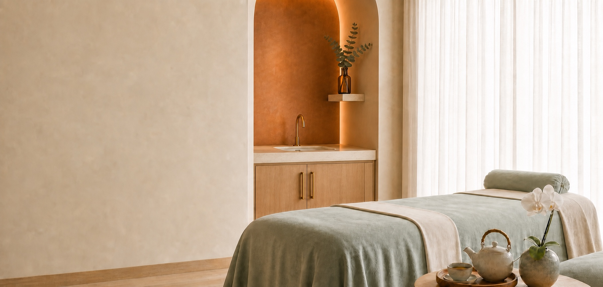

Responsive spa concept
A warm, natural identity shaped into a complete digital experience
The original Sapphira concept was created for a college assignment. I later rebuilt and expanded it as an independent portfolio project, improving the layout, responsive behaviour, content structure, accessibility, and overall visual direction.
Brand contribution
I created the original Sapphira logo in Adobe Illustrator, using curved lettering, leaf-inspired details, copper, mint, and natural tones to give the fictional brand a welcoming spa character.
- Project type
- Educational concept, independently redesigned
- My role
- Logo, visual design, content structure, development
- Tools
- Adobe Illustrator, HTML, CSS, Bootstrap, JavaScript